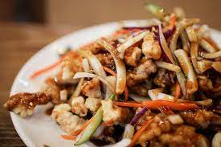

Here are the ingredients for sweet and sour pork, a popular Chinese dish
1 pound of pork tenderloin, cut into bite-sized pieces
1/2 cup of cornstarch
1/4 teaspoon of salt
1/4 teaspoon of black pepper
1 egg, beaten
2 cups of vegetable oil (for frying)
For the sweet and sour sauce
1/2 cup of ketchup
1/4 cup of rice vinegar
1/4 cup of brown sugar
2 tablespoons of soy sauce
1 tablespoon of cornstarch
1/2 cup of pineapple chunks (canned or fresh)
1/2 cup of chopped bell peppers (red, green, or both)
1/2 cup of chopped onions
1. In a shallow dish, mix together cornstarch, salt, and black pepper. Dip each piece of pork into the beaten egg, then coat with the cornstarch mixture.
2. Heat the vegetable oil in a wok or deep skillet over high heat until hot. Add the coated pork pieces in small batches and fry until golden brown and crispy, about 3-5 minutes per batch. Remove the pork with a slotted spoon and drain on paper towels.
3. In a separate bowl, whisk together ketchup, rice vinegar, brown sugar, soy sauce, and cornstarch until smooth. Set aside.
4. Drain the oil from the wok, leaving only about 1 tablespoon. Add the chopped bell peppers and onions and stir-fry for 2-3 minutes until they are slightly softened.
5. Add the pineapple chunks and stir-fry for another minute. Pour in the sweet and sour sauce and bring to a simmer, stirring constantly until the sauce thickens.
6. Add the fried pork pieces to the wok and stir to coat with the sauce. Cook for another minute or until the pork is heated through.
7. Serve hot with steamed rice and optional garnishes such as sliced scallions and sesame seeds.